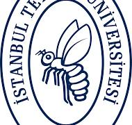
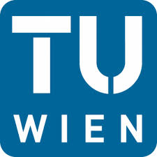

Education Background
-

2019-2024: Istanbul Technical University, Electronics and Communication Engineering
-

2023-2023 (Erasmus): Vienna Technical University, Electrical and Information Engineering
Work Experience
-
2024 - Current: TÜBİTAK BİLGEM, IT and Machine Learning Researcher
▪ Developed advanced deep learning models and working on IT security (Kali Linux, Penetration Tests).
▪ EfficientNet and AlexNet implementation for different datasets.
-
2023-2024: TÜBİTAK BİLGEM, Communication and Machine Learning Part-Time Researcher
▪ Worked on interferences and writing codes in Python to recognize the signal’s noise in channels (EU Project).
▪ Using Matlab, simulated interferences such as single-tone and narrowband signals, and employed Deep Learning algorithms (CNN) to detect these interferences in the channel, achieving a 99% accuracy rate.
-
2023-2023: Vienna University, Edge Computing and IoT Researcher
▪ Conducted research on Sustainable Watershed Management using IoT-driven Artificial Intelligence, worked with Dr. Atakan Aral.
-
2022-2022: Roketsan A.Ş, Embedded Software Intern
▪ Developed embedded software using VHDL (VHSIC Hardware Description Language) to control the rotation of the rocket's wing to the right or left, precisely adjusting the movement with a specific duty cycle.
-
2021-2021: Tüpraş, Software Intern
▪ Developed an innovative idea for the company; Interface design with QT design program and Java codes for problems in business life.